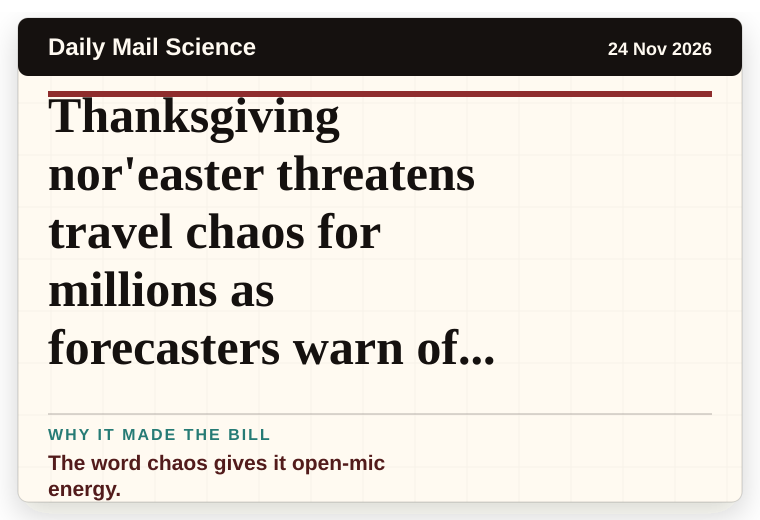
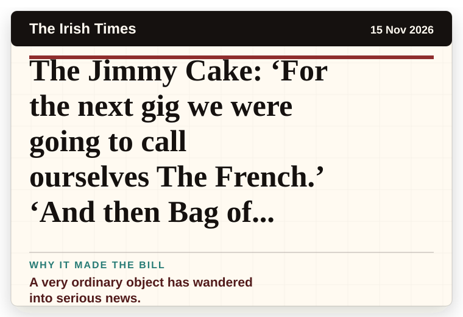

NT News
Australia
Chaos as airline suffers major outage amid intel chief’s warning
The word chaos gives it open-mic energy.
The latest daily picks, linked back to the original sources. Search the room, pick a source, or follow a headline out to the full story.
Record updated: 24 Nov 2026, 03:25 PM AEST
Showing 12 headline candidates from the refresh run completed on 24 Nov 2026, 03:25 PM AEST.
The word chaos gives it open-mic energy.

It has the shape of a tiny adventure reported with a straight face.

It has the shape of a tiny adventure reported with a straight face.

The scale is doing deadpan comedy.

The headline is already trying not to laugh.

The headline is already trying not to laugh.

The headline is already trying not to laugh.

The word chaos gives it open-mic energy.

The headline is already trying not to laugh.

A wonderfully specific detail has taken centre stage.

The word chaos gives it open-mic energy.

A very ordinary object has wandered into serious news.